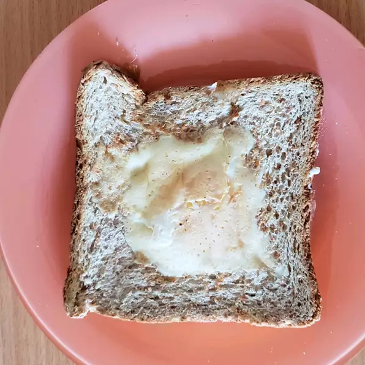

Egg in a Hole

Egg in the hole makes a delicious breakfast! A runny yolk egg cooked in the center of a piece of toast and eaten with a fork is a great way to enjoy an egg in a slightly different way. My kids feel fancy when eating these.
Ingredients
- 1½ teaspoons bacon grease
- 1 slice bread
- 1 egg
- salt and ground black pepper to taste
Steps
- Melt bacon grease in a nonstick pan over low heat.
- Cut a 2-inch hole in the center of bread slice; place in the hot skillet and cook until lightly toasted, about 2 minutes. Flip bread and crack egg into the hole; season with salt and pepper. Continue to cook until egg is cooked and mostly firm; flip again and cook 1 minute more. Serve immediately.